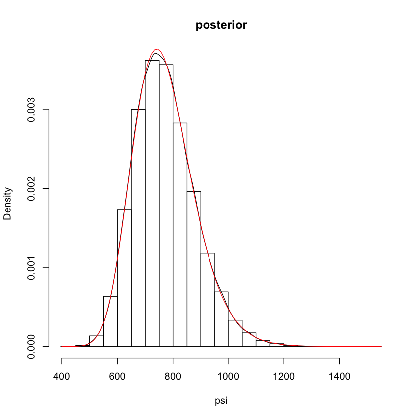
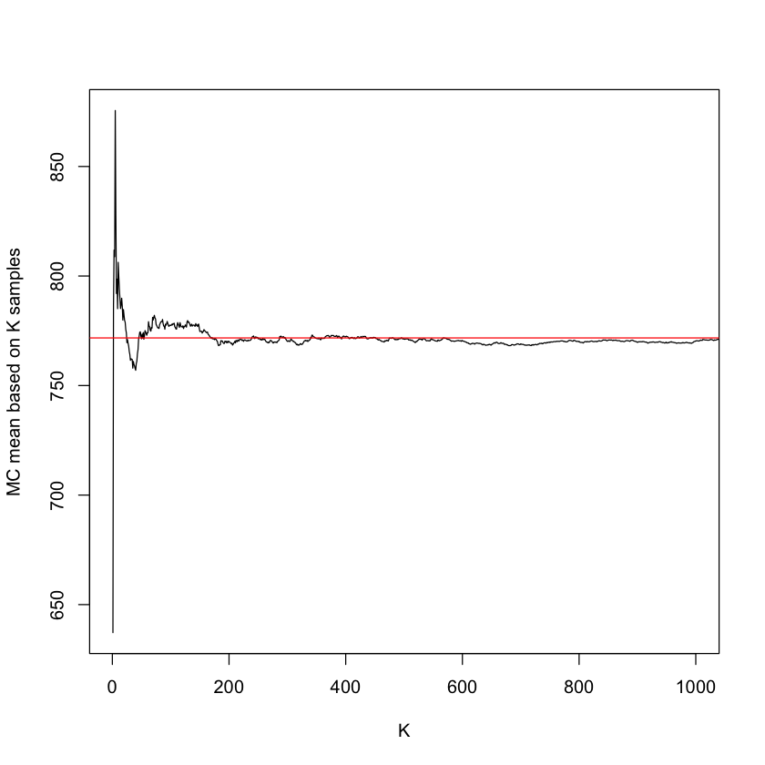
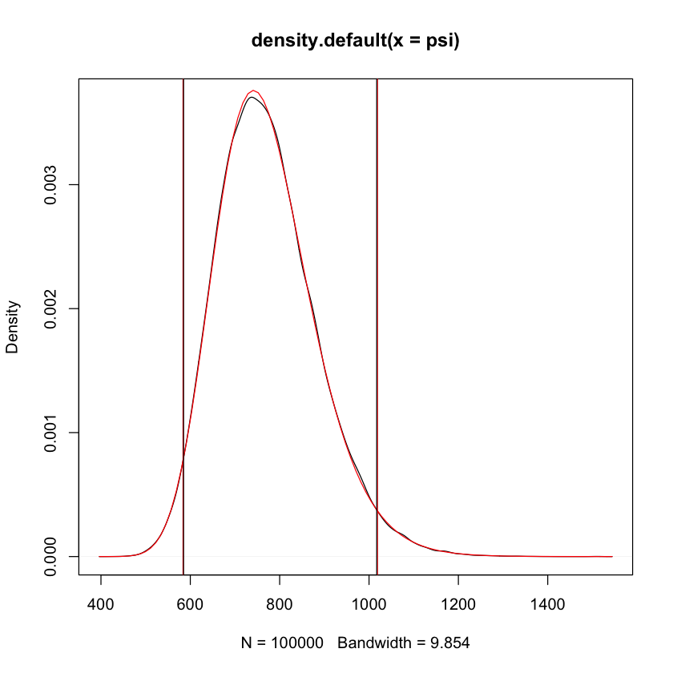
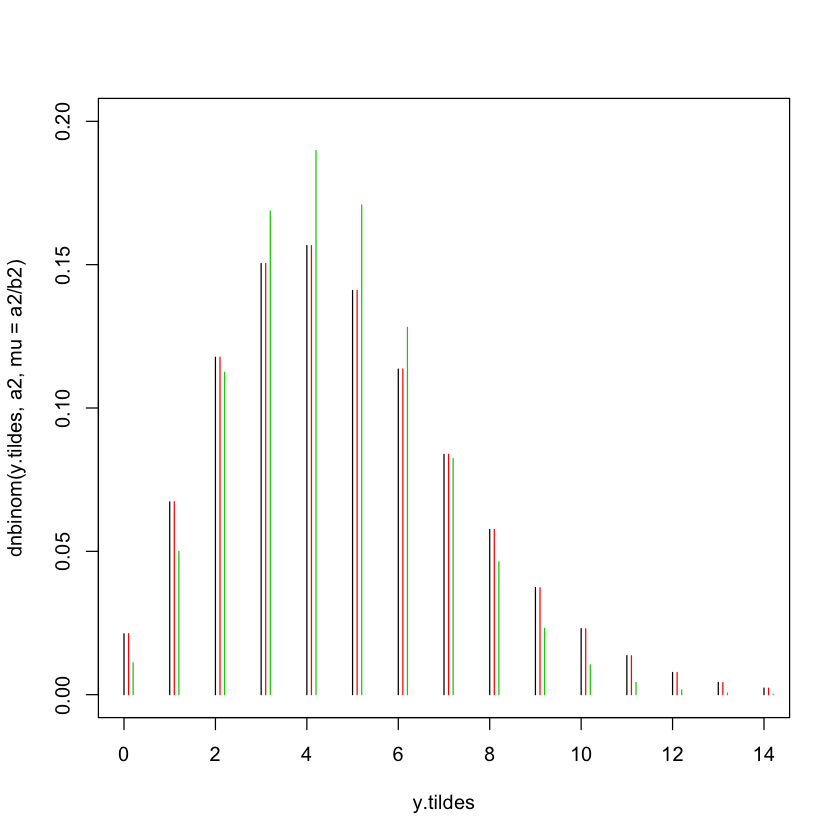
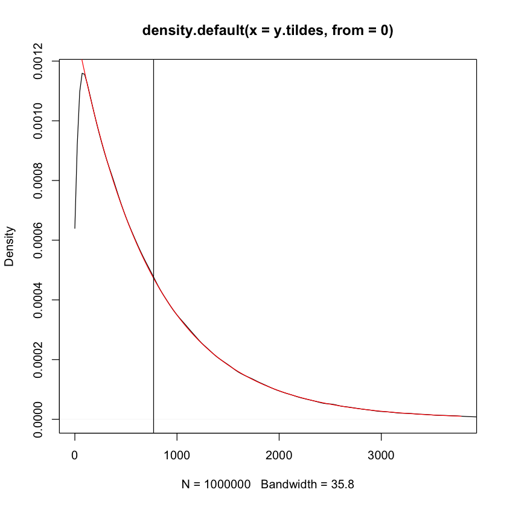

##### STAT 638
#### Matthias Katzfuss
######### R code for Chapter 4 ##########
###### illustration of Monte Carlo for inverse rate in exponential
K=100000
## parameters of the posterior of the rate parameter
a=50
b=37815
## posterior draws of the rate parameter
theta=rgamma(K,a,rate=b)
## transform to mean parameter
psi=1/theta
## plot posterior of psi
hist(psi,freq=FALSE,main='posterior') # histogram of psi draws
lines(density(psi)) # kernel-density estimate
curve(invgamma::dinvgamma(x,a,b),add=TRUE,col=2) # exact
## posterior mean
b/(a-1) # exact
mean(psi) # monte carlo approximation
## the larger K, the closer MC estimate
## *tends* to be to exact summary
plot(cumsum(psi)/(1:K),xlim=c(1,1000),type='l',
xlab='K',ylab='MC mean based on K samples')
abline(h=b/(a-1),col='red')
## posterior standard deviation
sqrt(b^2/(a-1)^2/(a-2)) # exact
sd(psi) # monte carlo approximation
## 95% credible interval (quantile-based)
ci.exact=invgamma::qinvgamma(c(.025,.975),a,b)
ci.mc=quantile(psi,c(.025,.975))
# add intervals to posterior plot
plot(density(psi)) # kernel-density estimate
curve(invgamma::dinvgamma(x,a,b),add=TRUE,col=2)
abline(v=ci.exact,col=2)
abline(v=ci.mc)
## P( psi < 600 | data )
invgamma::pinvgamma(600,a,b)
mean(psi<600)
## MC error decreases slowly for large K
plot(cumsum(psi)/(1:K),xlim=c(1,10000),type='l',
xlab='K',ylab='MC mean based on K samples')
abline(h=b/(a-1),col='red')
###### MC for predictive distribution in Poisson-gamma model
## assumed parameters
a=0.5; b=0 # jeffreys prior
y=c(5,4) # poisson observations
## posterior of mean parameter theta
n=length(y)
a2=a+sum(y)
b2=b+n
curve(dgamma(x,a2,b2),0,2.5*mean(y))
## exact posterior predictive distributions
y.tildes=0:round(3*mean(y))
plot(y.tildes,dnbinom(y.tildes,a2,mu=a2/b2),ylim=c(0,.2),type='h')
## MC approximation of post. pred. distr.
thetas=rgamma(K,a2,b2) # sample from posterior
pp.mc=numeric(length=length(y.tildes))
for(j in 1:length(pp.mc)) pp.mc[j]=mean(dpois(y.tildes[j],thetas))
lines(y.tildes+1e-1,pp.mc,type='h',col=2)
## predictive distribution, plugging in MLE
lines(y.tildes+2e-1,dpois(y.tildes,mean(y)),type='h',col=3)
#### posterior predictive distribution for exponential-gamma model
K=1e6
## parameters of the posterior of the rate parameter
a=50
b=37815
## posterior draws of the rate parameter
thetas=rgamma(K,a,rate=b)
## MC samples from post. pred. distr.
y.tildes=rexp(K,thetas)
## MC (kernel density) estimate of posterior pred
plot(density(y.tildes,from=0),xlim=c(0,5*b/a))
## exact posterior pred
curve(a*b^a/(x+b)^(a+1),add=TRUE,col=2)
## MC estimate of PP mean
mean.pp=mean(y.tildes)
mean.pp # exact mean: 771.7
abline(v=mean.pp)
771.734693877551
771.831659052567

111.390308313294
111.218024621904

0.0401536510132767
0.03917


770.948738931396
